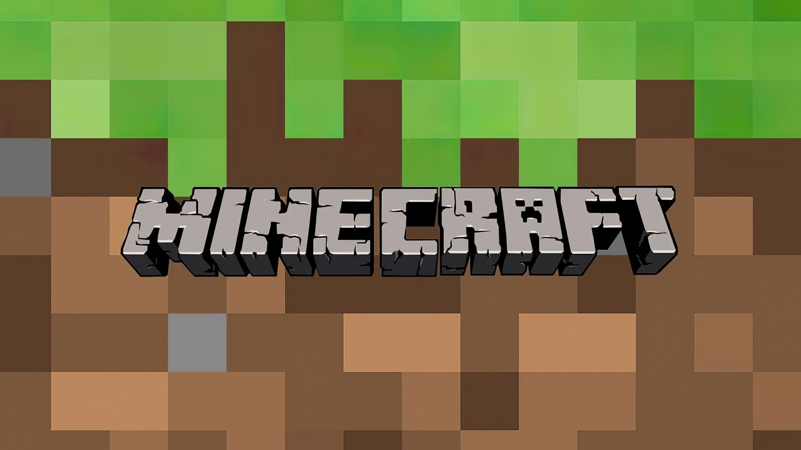
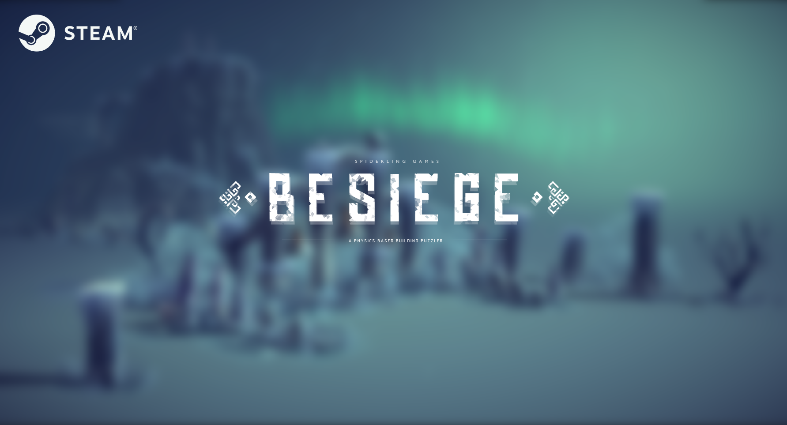
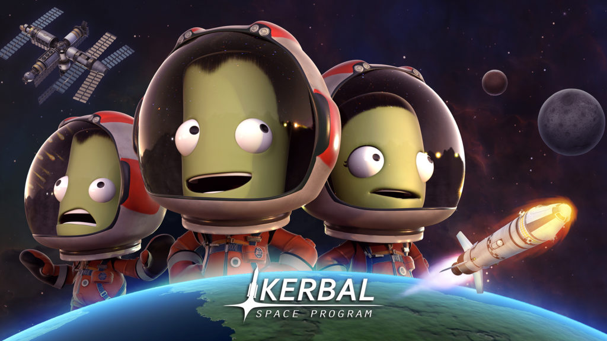
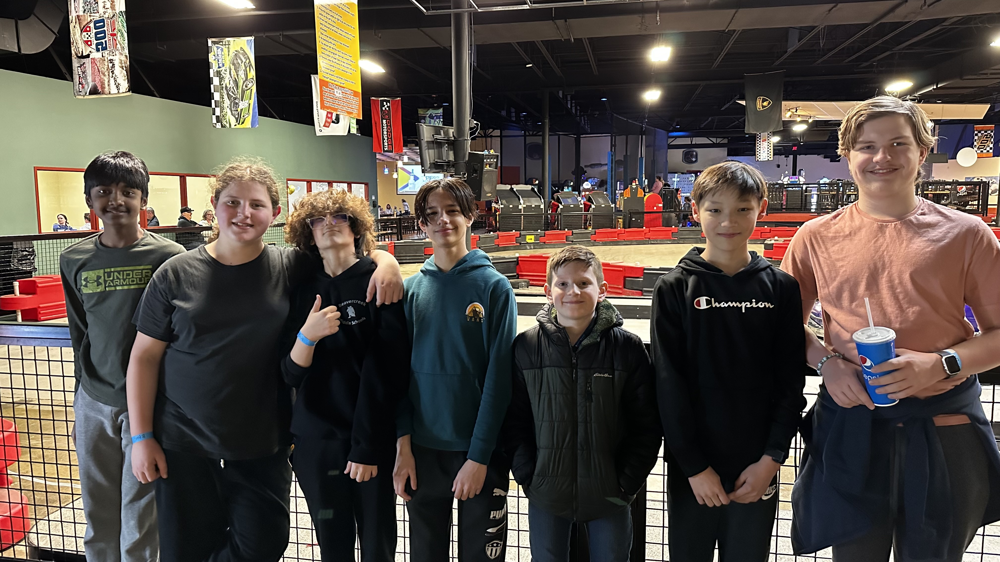
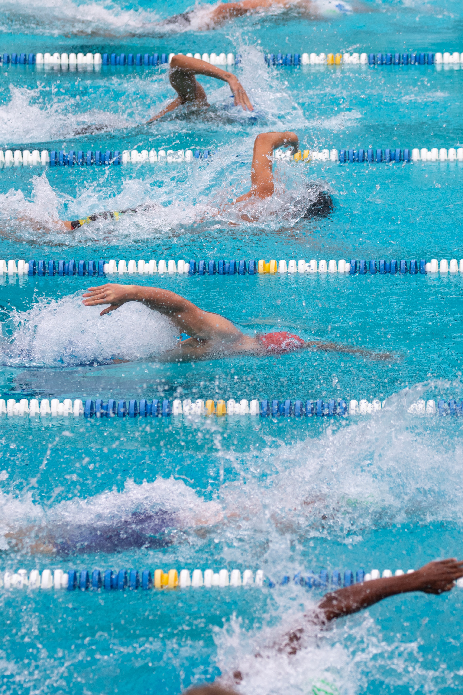
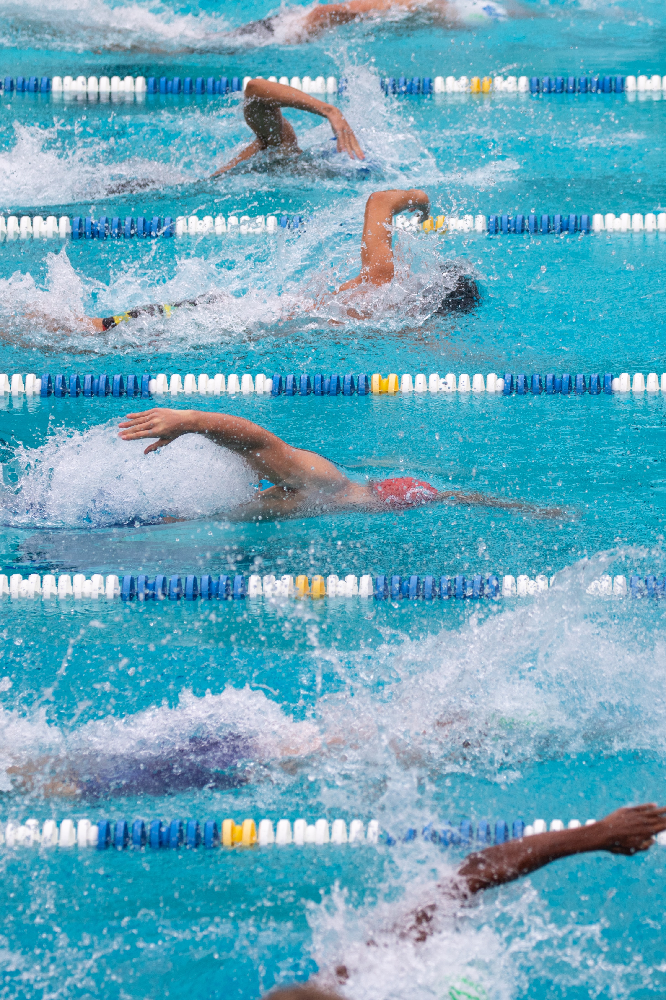

Hello and welcome to my portfolio! As you have seen, my name is Benjamin Kaiser and I am in 7th grade. On this page you will find out a bit more about me and what I do in my spare time. If you’re wondering what you will find on the rest of the portfolio, you can find my coding progression, my projects, and my definition of the five qualities.
I enjoy playing sandbox video games such as
Minecraft, 
Besiege, and
Kerbal Space Program. These games
give me the freedom to do basically whatever I want to do, which I find
very fun. I also enjoy exploring the world of
photography  by taking pictures
with my Nikon DSLR camera.
by taking pictures
with my Nikon DSLR camera.
In my free time I enjoy hanging out with my
friends,  either in real life or
in VR,  playing games together.
During the summer I swim  for the
Idle Hour swim team. Last season, I got 12 first place medals!
playing games together.
During the summer I swim  for the
Idle Hour swim team. Last season, I got 12 first place medals!